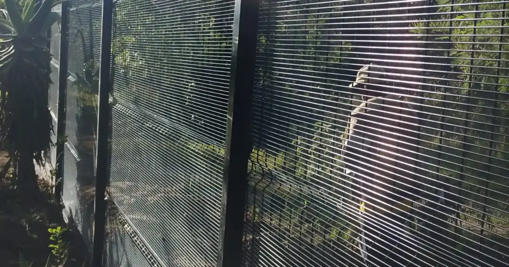
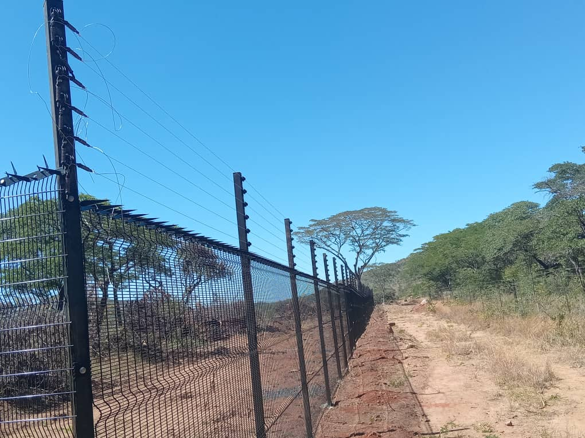

Quick answer
Clearview (also sold as ClearVue) is a security fence made from rigid welded mesh panels with very small openings, so there is nothing to grip or put a foot into. It is hard to climb and easy to see through, which is why schools, businesses, warehouses, solar sites and homes in Zimbabwe use it. The quote depends mainly on perimeter length, panel height, ground conditions, any topping (spikes, razor wire or electric strands) and the number of gates.

What is clearview fencing?
Clearview fencing is made from steel wires welded into a tight grid and formed into flat, rigid panels. The panels are bolted to steel posts to form a continuous barrier. The openings are narrow, so fingers and shoe tips cannot get a hold, and cutting through takes time and makes noise.
You will see it called clearview, clear view, ClearVue, anti-climb mesh or 358 mesh. They all describe the same idea: a see-through, high-security welded panel fence.
Why people choose it
- Hard to climb. The small apertures leave nothing to hold, unlike diamond mesh or a palisade.
- You can see through it. Guards, CCTV cameras and neighbours keep a clear view of the boundary. A solid wall hides an intruder; clearview does not.
- Neat and modern. Rigid panels stay straight, which suits schools, offices, estates and shop fronts.
- Galvanised for outdoor use. Galvanised steel resists rust in Zimbabwe's rainy season and strong sun.
- Easy to upgrade. Spike topping, razor wire or electric strands can be added above the panels.

Where clearview works best
| Site | Why clearview suits it |
|---|---|
| Schools and institutions | Keeps the grounds secure while staff and parents can see in and out. |
| Commercial and industrial premises | A professional look at the front, serious security around stores and yards. |
| Solar installations | Protects panels and inverters without shading them like a wall would. |
| Homes and estates | A clean boundary that does not block the view or the breeze. |
| Mines, depots and restricted zones | Combined with razor wire, it forms a high-security perimeter. |
Clearview vs diamond mesh vs palisade
| Clearview | Diamond mesh | Palisade | |
|---|---|---|---|
| Climb resistance | High | Moderate, better with a topping | Moderate: the rails give a foothold |
| See-through | Yes | Yes | Partly |
| Look | Neat, modern panels | Practical, traditional | Heavy, industrial |
| Uneven ground | Panels are stepped on slopes | Follows slopes well | Stepped on slopes |
| Budget | Higher investment | Usually the most economical | Mid to high |
If you are fencing a long farm or rural boundary on a budget, diamond mesh or field fence is usually the better fit. For a school, business or high-risk site, clearview is worth the extra investment.
Toppings: how much security do you need?
- No topping: fine for most homes, offices and schools where the aim is a clear, hard-to-climb boundary.
- Spike topping or formed bends: makes the top of the fence harder to get over without looking harsh.
- Razor wire: for depots, stores, mines and other high-risk perimeters. See razor wire vs barbed wire.
- Electric fence strands: add an alarmed, deterrent layer above the panels.
Gates
A fence is only as strong as its gates. Plan pedestrian and vehicle gates at the same time as the fence so they match in height and security level. Azzar fabricates and fits gates to match the fence line, and a sliding vehicle gate can be automated with a gate motor. See our electric gate motor guide.
What affects the price of clearview fencing
Prices change with steel costs, so a reliable quote is based on your site rather than a price list. The main factors are:
- Perimeter length in metres. Longer runs usually cost less per metre.
- Panel height. Taller panels use more steel and stronger posts.
- Ground conditions: soil, rock, slopes and whether posts go into new footings or an existing wall.
- Topping: none, spikes, razor wire or electric strands.
- Gates: how many, how wide, and whether they are automated.
- Supply only or full installation, and the distance from Harare for delivery.
How to get an accurate quote
Send Azzar your location, the approximate length of the boundary, what you want to protect, any existing wall or fence, your timeframe and a few clear photos of the site. We will tell you whether a free on-site assessment is needed before quoting.
Get a quote from Azzar
Send us your location, the approximate length, what you want to protect and a few photos. We reply with a recommendation and a no-obligation quote, and arrange a free site assessment if one is needed.